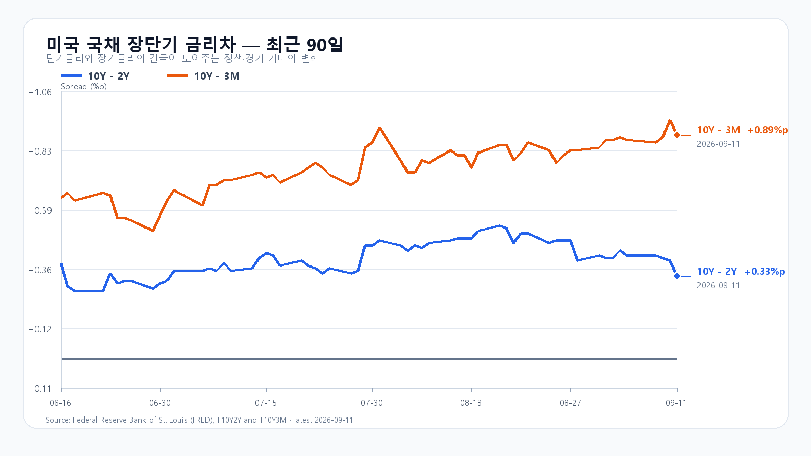
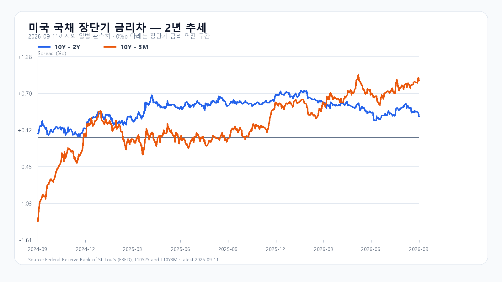

월요일 한국장은 유가 재상승과 미국 지수선물 약세를 안고 출발한다. 사우디는 드론 공격 뒤 예방적으로 East-West 송유관을 일시 폐쇄했고, 홍해와 호르무즈 해상 운송 위험도 겹쳤다. Reuters와 AP가 보도한 상황이다. 원유 수입 비용이 오르면 물가와 금리 경로를 거쳐 위험자산 수요가 위축될 수 있어 장전 선물의 약세가 더 중요해졌다.
미국장은 금요일에 올랐다. S&P 500은 0.86%, 나스닥은 0.96% 상승했지만, 그 반등을 한국 메모리주의 회복 신호로 읽기에는 종목별 흐름이 갈렸다. 미국장 마감을 종목별로 보면 SOXX는 1.863%, AMD는 2.488% 올랐으나 NVIDIA는 0.032%, Micron은 0.220% 내렸다. 지수는 반등했지만 메모리주 전반으로 매수세가 번진 날은 아니었다.
| 티커 | 정규장 종가(달러) | 등락률 |
|---|---|---|
| QQQ | 714.88 | +0.873% |
| TQQQ | 70.98 | +2.557% |
| SOXX | 527.07 | +1.863% |
| SMH | 568.53 | +1.472% |
| NVDA | 218.29 | -0.032% |
| AMD | 516.13 | +2.488% |
| MU | 975.26 | -0.220% |
| AVGO | 361.99 | +0.321% |
국내에서는 지난 금요일 코스피가 6,909.91로 1.76% 내렸고, KODEX 레버리지는 109,995원으로 4.35% 하락했다. 장중 저점은 106,200원, 고점은 111,545원이었다. 110,000원을 되돌림의 기준선으로, 106,200원을 지지선으로, 111,545원을 저항선으로 둔다. 월요일 장전 NXT 거래에서 삼성전자와 SK하이닉스가 함께 약세를 보인 점도 미국의 금요일 반등만으로 국내 메모리주 매수세가 확인된 것은 아니라는 판단을 뒷받침한다.
9월 11일 15시 30분 외국인 현물은 2조3,556억원, 프로그램은 1조8,199억원 순매도였다. 그런데도 코스피 종가는 기본 경로의 가격 범위인 6,800~7,000에 남았다. 지수의 낙폭이 제한돼도 외국인 매도는 장 후반까지 이어졌다. 보존 장중 자료와 프로그램 매매 원문 기준이다.
메모리의 중기 재료가 사라진 것은 아니다. TrendForce의 9월 11일 현물표에서 DDR5 16Gb는 54.333달러로 보합, DDR4 8Gb는 45.214달러로 0.14% 내렸다. 공급 제약은 남아 있지만 이 숫자가 당일 주가 수급을 대신하지는 않는다. 상위 10개 팹리스 기업의 2분기 매출이 전년보다 73% 늘었다는 TrendForce 집계도 장기 AI 수요의 근거이지 월요일 개장 방향을 단정할 근거는 아니다.
이번 주에는 에너지 가격 상승에 따른 물가 우려가 연준의 금리 경로와 맞물린다. 8월 미국 CPI는 전월 대비 0.4%, 전년 대비 3.4% 올랐고 근원 CPI는 각각 0.3%, 2.4% 상승했다. 9월 11일 미 국채 금리는 3개월 4.07%, 2년 4.63%, 10년 4.96%였다. CPI와 미 재무부 수익률은 높은 할인율의 부담이 아직 남아 있음을 보여준다. 미국 소매판매와 수출입물가는 9월 16일 21:30 KST, FOMC 일정은 9월 15~16일(미국 동부시간)이며 성명은 9월 17일 03:00 KST에 나온다.
| 경로 | 범위·확률 | 성립 조건 | 무효화·전환 신호 |
|---|---|---|---|
| 기본 | 6,800~7,000, 50% | 외국인 현물 수급 -10,000억원 이상 | 6,800 미만 또는 7,000 초과 |
| 강세 | 7,000 초과~7,150, 20% | 외국인 현물·프로그램 모두 순매수 | 7,000 이하 |
| 약세 | 6,550~6,800 미만, 30% | 외국인 현물·프로그램 모두 순매도 | 6,800 이상 |
지수의 명목 90% 포괄 범위는 6,450~7,250으로 둔다. 이는 통계적으로 보정한 신뢰구간이 아니다. 대응 점수는 공격 15, 관망 45, 방어 40으로 둔다. 15시 20분에는 6,800선과 외국인 현물·프로그램 수급을 다시 확인한다. 7,000 초과와 두 수급의 순매수는 강세 경로를, 6,800 미만과 두 수급의 순매도는 약세 경로를 각각 확인한다.
장전 가격
| 항목 | 가격·변화 | 출처 시각 |
|---|---|---|
| 삼성전자 NXT | 254,000원 · -2.12% | 2026-09-14T08:15:32.582726+09:00 |
| SK하이닉스 NXT | 1,755,000원 · -3.15% | 2026-09-14T08:15:32.582741+09:00 |
| 달러/원 하나은행 고시 | 1,343.80원 · -0.53% | 2026-09-14T07:41:57+09:00 |
| Nasdaq100 선물 | 29,060.00 · -1.113% | 2026-09-14T08:05:27+09:00 · 지연 시세 |
| S&P500 선물 | 7,617.75 · -0.545% | 2026-09-14T08:05:19+09:00 · 지연 시세 |
| 브렌트 선물 | 107.55 · +2.810% | 2026-09-14T08:05:27+09:00 · 지연 시세 |
| WTI 선물 | 102.33 · +2.279% | 2026-09-14T08:05:28+09:00 · 지연 시세 |
NXT · 환율 · Nasdaq100 선물 · S&P500 선물 · 브렌트 · WTI
NXT는 국내 정규장과 별도 시장이다. 환율은 은행 고시이며 선물은 지연 시세다.

